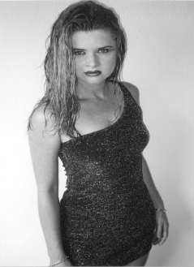

|
For Website Viewers:
The "rather eye-catching photo"
is not available. |
From:
North of Jewfish Creek
Dear Friend & Subscriber,
As you can see, I have enclosed a rather
eye-catching photo with this letter.
Why have I done this? It's simple...
To Help You Learn A Way
To Make A Lot More Money!
You'll understand completely when you've
finished reading this newsletter.
After that dud of a newsletter last month, I
have decided to make up for it this month by giving you some
info which will be profitable and
interesting. This issue is gonna be all about...
Sex And Money!
Money first.
When I got started in the direct response
business, the postage cost to mail a one-ounce, first-class
letter was 6¢. Now, it's up to 37¢.
But hold on un momentito. The per capita
income of the U.S. when I started in direct response back in
1968 was $2,231... and... the per capita income now is about
$22,400. That means, first-class postage has risen in price by
617%... but... our average per capita income has gone up
1004%.
So, when you adjust for inflation, it is
actually cheaper to buy a stamp now than it was more than
30-years ago. Trust me, for a "certain" reason, this
is going to be a very exciting piece of information (after you
finish reading this letter), which pertains to you.
But, meanwhile, just for fun, let's examine
the cost of buying a first-class stamp each year all the way
back to 1900.
In 1900, the cost of a first-class stamp was 2¢.
It stayed at 2¢ for 16 years! Then, in 1917, the cost
went to 3¢... which was a 50% increase. It stayed that way
for two years until 1919... when... they dropped the price back
to 2¢!
You know what's weird? When they went from 2¢
to 3¢, it was a 50% jump in price. But, when the price
dropped back to 2¢, it was only a 33% reduction in price.
Does that mean you could buy shit for $20 and sell it for $30
(a 50% jump in price)... and then... buy it back for $20 (a
33% reduction in price)... and... thus make a 17% profit? (50%
minus 33% equals 17%)
Somehow, I know this ain't so... but... it
sure would be a neat way to make money if it was so, wouldn't
it?
Anyway, in 1919 stamps were selling for 2¢
again and they didn't go up until 1932 when they rose to 3¢.
After that, the rate of a stamp stayed at 3¢ for 26 years all
the way to 1958 when it started selling to the tune of 4¢
apiece.
How long did that 4¢ figure last? Only five
years this time. In 1963 stamps increased to a nickel (5¢)
apiece. Five years go by and, in 1968, they are charging 6¢.
That rate only lasted three years. In 1971,
stamps soared to 8¢ each. Again, only three years pass until
the next price increase. In 1974, 10¢ would fetch you a
first-class stamp. A mere one year later, the going rate hiked
to 13¢. After three years of selling at 13¢, in 1978 the
price of a first-class stamp advanced to 15¢. In 1981, 19¢.
In 1985, 22¢. In 1988, 25¢. In 1991, 29¢. In 1995 they
advanced to 32¢. In 1999, up a penny to 33¢. In 2001, up
another penny to 34¢. And now, in 2002, the price of a
first-class stamp is only 37¢.
You know what this all translates to? Just
this:
First-Class Postage Stamps Are
Now The BEST Bargain You
Can Get Your Hands On!
At least, if you are in direct marketing.
Escucha! (That means "listen" in Spanish.) Escucha:
About 10 years ago, only 7 out of 100 pieces of mail were what
I call "A-Pile" mail. That's mail which is, or which
appears to be, a first-class personal letter. By making sure
all my letters got into that A-Pile, I had an enormous
advantage over nearly everyone else selling by direct mail.
And Now... That Same
Advantage Is Humongous!
People hardly ever send letters
anymore. Instead, people are using e-mail. In fact, I bet now,
only about 1 out of 200 pieces of mail are (or appear to be)
A-Pile mail.
In a newsletter I wrote years ago, I described
how, when I was a little boy, the phone rang at my Grandma's
house and the operator would say, "You
have a long distance call." The entire household
would come to attention. Someone would say in a hushed tone, "Grandma,
it's long distance!"
The impact of a long distance phone call in
those days was tremendous.
Nowadays, of course, a long distance call is
so routine, nobody gives it a second thought. Even an
international call doesn't cause much of a flurry anymore.
Anyway, in that same newsletter, I said I was
the biggest customer of Federal Express in all of Monroe
County, Florida. And, as I also explained, I didn't use FedEx
because of their speed of delivery. No, I used FedEx...
because of...
The Impact A Federal Express
Package Had On A Recipient!
This was especially true of someone who didn't
work in an office. Even today, Federal Express packages are
given enormous attention by a person who receives one at his
or her house.
Now, because of that tiny percent of letters
which are actually real letters...
You Can Get A Similar Impact For Your
Sales Message For Only 37¢!
Let's add some grease to the frying pan. Some
group of morons (I don't know if they were government morons
or advertising morons) have just completed a study which
revealed... sex does NOT work in advertising.
What Pure
Unadulterated Bullshit!
What is really true is... sex used improperly
does not work in advertising. It's like saying headlines don't
work in advertising... or... words don't work in advertising.
Actually, that's true... if... you are talking about stupid
headlines and stupid words.
Sex (used properly) can enormously improve the
profitability of your advertising. But, many advertising
experts have had it beaten into their brains that "sex
sells"... without ever being taught... it is only "sex
used properly" which increases sales.
Let's talk about (and allow me to illustrate)
how sex is often used improperly.
Let's say some big company is selling a
laundry detergent. They run television, newspaper and magazine
ads featuring a woman with gigantic breasts. Those ads will be
remembered. The women who see the ads will remember them with
disgust. The men will remember them because they will fixate
on those gigantic breasts. But, you know what? Because of improper use of sex in that advertising...
Nobody Will Remember The
Name Of The Laundry Detergent!
There are different types of sex appeal. Take
Penelope Cruz, for instance. She's beautiful, she's sexy...
and... she looks like a nice person. Men like her. Women like
her. Thus, she is perfect for the perfume campaign she models
for.
On the other hand, can you even imagine a
woman who would buy "Pamela Anderson Perfume"?
Pamela Anderson and other women with her type
of "sex appeal" are perfect for advertising targeted
to the "Slamhead" market. In case you don't know, a
"Slamhead" is a young, male beer drinker (most often
a college student) who, after he drinks his beer, slams the
empty can into his forehead, then finishes crumbling it with
his hand... and then... throws the crushed can away. These are
the guys who howl like dogs at bikini contests, urinate off
hotel balconies, and buy videos of "Girls Gone
Wild."
"Slamheads" are attracted to Pamela
Anderson. So, if "Slamheads" are your target market,
use her or a woman like her.
But, most of
your marketing efforts will not be targeted to "Slamheads."
And, since that's the case, our marketing efforts need to use
a different kind of
sex appeal. In my last issue, I suggested you peruse this
particular website...
www.SirianCalendar.com
You know what I forgot? Odd as it may seem,
many of my readers still don't have or use computers. So, for
those people (and for those of you who haven't been to that
website recently), I am going to reproduce in this newsletter
something which is now on the website:
|
The Sirian Story
(This will be
of special interest to anyone in advertising or
marketing)
Sirian Piedra Quesada was
born in a section of San Jose, Costa Rica which is
only a short drive from the lush rain forest of this
unique country.
Actually, no matter where
you are in Costa Rica, you are only a short drive from
the rain forest.
Costa Rica is known
worldwide for its beautiful women... but... even
amongst all this feminine beauty, Sirian is
exceptional. Her flawless fair skin, forest green
eyes, long blond hair, coupled with an absolutely
beautiful face and body, give her an electric palpable
physical presence. Sirian is widely considered to be
the most beautiful woman in Central America... and...
seeing her in person is akin to having a religious
experience.
Until her recent
resignation, Sirian has, for a long time, been a
staple on Costa Rican TV. She appeared twice a week as
one of the two "lottery girls" who randomly
selected the numbered ping pong balls, which
determined who won the Costa Rican National Lottery.
There's a rumor in Costa
Rica that more people turned on their TV's twice a
week to see Sirian than to find out if they won the
lottery.
She's a glamorous woman who
leads a decidedly unglamorous life. Sirian seldoms
drinks even a glass of wine, doesn't smoke or use
drugs, and avoids any sort of night life. She
exercises two hours a day, goes to sleep at 9 p.m.,
and is a single mother completely devoted to her
6-year-old daughter and the rest of her family. All of
whom live in Costa Rica.
There are many beautiful
women who are not photogenic. Conversely, there are
many plain women who, through the alchemy of the
camera lens, photograph like a world-class beauty.
Sirian represents the best
of both worlds. She is dazzling in person, and
dazzling in print, television or film. Plus, she has
what marketing legend Gary Halbert describes as "marketable
beauty." Simply put, that means...
Putting
A Photo Of Sirian
In Any Ad Produces A Dramtic Rise
In The Sales Resulting From That Ad!
And, it does not matter
what you are selling. Put Sirian in a thong bikini and
she looks like she just stepped out of the pages of
the swimsuit edition of "Sports
Illustrated."
If Sirian is posing in
lingerie, she looks like a model for "Victoria's
Secret."
When Sirian wears a simple
black dress, she transmits class and quality.
A
$500,000 Photo!
Bill Heid, President of AVS
Marketing, says his sales were flat until he put a
photo of Sirian in one of his ads. Then, in what
seemed to be the blink of an eye, his sales soared to
over One-Half Million Dollars. Below is the photo that produced all those
sales:

Sirian hates to be away
from her family. Therefore, she won't pose any place
except Costa Rica or Miami, Florida. She'll pose in
Miami since the flight from Costa Rica is just a
little over 2 hours.
Because of this, Sirian's
modeling fees are only a fraction of what she could
get if she were willing to travel.
If you are interested in
using Sirian in an ad campaign, e-mail her (at
[email protected]) the details and she'll get back
to you promptly.
By the way, if you do
e-mail her, she always likes to know which of her
calendar photos people find most appealing.
|
Now, pay
attention here! That picture of Sirian was effective
because of her beauty, her sex appeal, and...
Her Likability!
It shines through that particular photograph.
It isn't a sexy photo that offends. Or threatens. She doesn't
look like someone who, if you were to say "Hello"
to her, would tell you to go fly a kite. Know this: Likability
is at least as important as sex appeal.
Some proof: The readers who went to that
website were asked to vote for their favorite photo. The
winner was the following photo which was posted on July 6th.
That is an overtly sexy photo. But, people who
voted it their favorite said they liked it because she not
only looked sexy... but also... because she looked kind, warm
and friendly.
Here are four other photos from her website:
Photo A |
Photo B |
Photo C |
Photo D |
Unless I was working the "Slamhead"
market, I would NOT use any of those photos. In Photo
"A", she looks like a snot-nosed, smartass, little
bitch. In Photo "B", Sirian looks hard, cold and
unapproachable. In Photo "C", she has sort of a
"trampy" look. And, in Photo "D", she is too
obviously posing to look sexy.
Want to know how to make "killer"
profits using a photo of a sexy woman in your advertising?
Use It
In Direct Mail
As A Grabber!
Do NOT copy it onto the pages of your
letter. Do send it as a stand
alone photo, using it like I did with the stand alone
photo enclosed with this newsletter.
That sure as hell got your undivided
attention, didn't it?
And, that's why I enclosed it.
| |
Sincerely, |
| |
 |
| |
Gary C. Halbert
|
| P.S. |
While
it's true Sirian is my fiancèe, it is also true she is the
most cost-effective, profit-producing model I've ever met in
my entire career. Once again, you can check out dozens of her
photos (for free) at...
www.SirianCalendar.com
And, should you be interested in using her as a model
to drastically increase the profits of your marketing
campaigns, you can e-mail her at:
[email protected]
|
| P.S.#2 |
Want
to read the hottest book ever written? I'm the one who wrote
it and you can find out all about it by going to:
www.KillerSexBook.com
That's it for this month. I'm not always boring, am I?
Peace.
|
Copyright © 2003 Gary C. Halbert. All Rights
Reserved. |